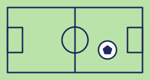
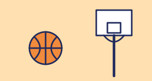
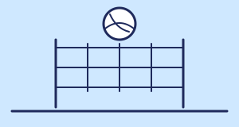
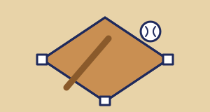
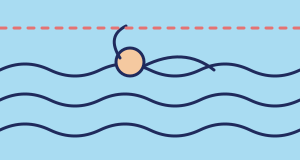
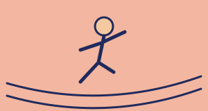
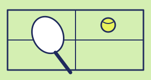
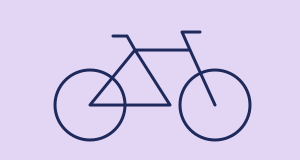
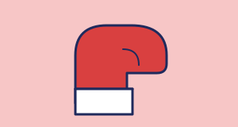

Introducción
Bienvenido a la cuna del deporte: donde la pasión no tiene límites. El deporte no es solo un juego; es constancia, emoción, superación y el latir de millones de corazones en todo el mundo. En Pasión por el deporte, vivimos y respiramos cada disciplina con la misma intensidad que tú. Desde los marcadores de último segundo y las jugadas inolvidables, hasta los análisis más profundos, historias de esfuerzo y las noticias más recientes del mundo deportivo.
Ya seas un fanático del fútbol, un apasionado del baloncesto, seguidor del motor o un entusiasta del fitness, este es tu espacio. ¡Prepárate para sentir la adrenalina, debatir con la comunidad y llevar tu amor por el deporte al siguiente nivel!
Propósito y público
Propósito: informar sobre nueve deportes, explicar sus reglas básicas y motivar a practicar deporte con buenos hábitos de salud.
Público: estudiantes y jóvenes que quieren conocer o elegir un deporte, y cualquier persona curiosa por el tema.
Deportes de equipo
Fútbol

Dos equipos de once jugadores compiten por meter el balón en la portería rival usando todo el cuerpo menos las manos y los brazos. Es el deporte más popular del planeta.
- Duración: 90 minutos, en dos tiempos de 45
- Jugadores: 11 por equipo
- Gran torneo: la Copa Mundial de la FIFA, cada cuatro años
Cómo se juega
El equipo que marca más goles gana. Si el balón sale por las líneas laterales se reanuda con un saque de banda, y si sale por el fondo, con un saque de meta o un tiro de esquina.
Reglas básicas
- El fuera de juego castiga al atacante que recibe el balón adelantado respecto a la defensa.
- Las faltas se sancionan con tiros libres, o con penal si ocurren dentro del área.
- Las tarjetas amarilla y roja sancionan la conducta; la roja significa expulsión.
Qué desarrolla
Coordinación, resistencia, trabajo en equipo y toma de decisiones.
¿Sabías que? Las reglas modernas nacieron en Inglaterra en 1863, cuando se fundó la Football Association.
Baloncesto

Dos equipos de cinco jugadores buscan encestar el balón en un aro elevado. Se juega con rapidez, puntería y mucho trabajo en equipo.
- Duración: cuatro cuartos (10 min en FIBA, 12 en la NBA)
- Jugadores: 5 por equipo en cancha
- Altura del aro: 3,05 metros
Cómo se juega
Se avanza botando el balón o pasándolo. Un tiro dentro de la línea vale 2 puntos, uno desde fuera de la línea de tres puntos vale 3 y el tiro libre vale 1.
Reglas básicas
- No se puede caminar con el balón en las manos sin botarlo (pasos).
- Si un jugador deja de botar el balón, no puede volver a botarlo (doble).
- Los equipos tienen 24 segundos para lanzar al aro cuando atacan.
Qué desarrolla
Puntería, agilidad, salto y visión de juego.
¿Sabías que? Lo inventó James Naismith en 1891 y al inicio se usaban cestas de duraznos como canastas.
Voleibol

Dos equipos separados por una red deben pasar el balón al campo contrario sin dejar que toque el suelo en el propio.
- Jugadores: 6 por equipo
- Formato: mejor de cinco sets
- Puntos: 25 por set (15 en el quinto)
Cómo se juega
Cada equipo puede tocar el balón hasta tres veces antes de enviarlo al otro lado. El equipo que no logra devolverlo concede el punto al rival.
Reglas básicas
- Un mismo jugador no puede tocar el balón dos veces seguidas, salvo en el bloqueo.
- Los jugadores rotan de posición cada vez que su equipo recupera el saque.
- El líbero es un jugador defensivo que viste una camiseta de otro color.
Qué desarrolla
Reflejos, salto, precisión y comunicación.
¿Sabías que? Lo creó William G. Morgan en 1895 y primero se llamó "mintonette".
Béisbol

Un equipo batea y corre por las bases mientras el otro lanza y defiende en el campo. Gana quien anota más carreras.
- Duración: 9 entradas
- Jugadores: 9 por equipo en el campo
- Equipo: bate, pelota y guante
Cómo se juega
El lanzador intenta que el bateador falle. Si el bateador golpea la pelota, corre por las bases (primera, segunda y tercera) para volver a home y anotar una carrera.
Reglas básicas
- Tres strikes ponen out al bateador.
- Cuatro bolas le dan al bateador pasar a primera base.
- Si un defensa atrapa la pelota en el aire, el bateador queda out.
Qué desarrolla
Reflejos, puntería, velocidad y concentración.
¿Sabías que? Una media entrada termina cuando el equipo que batea suma tres outs.
Deportes individuales
Natación

Se compite en piscina cubriendo una distancia en el menor tiempo posible. Trabaja todo el cuerpo y cuida las articulaciones.
- Estilos: libre, espalda, pecho y mariposa
- Piscina olímpica: 50 metros de largo
- Se practica: en competencia, recreación y salud
Cómo se juega
En las competencias se nada en carriles y gana quien toca primero la pared al final de la distancia. En las pruebas combinadas se usan los cuatro estilos.
Reglas básicas
- En pecho y mariposa se debe tocar la pared con las dos manos a la vez.
- Hay que nadar el estilo de la prueba; si no, el nadador es descalificado.
- La salida se hace con la señal del juez; adelantarse puede descalificar.
Qué desarrolla
Resistencia, flexibilidad, control de la respiración y fuerza.
¿Sabías que? Está en los Juegos Olímpicos desde los primeros de la era moderna, Atenas 1896.
Atletismo

Reúne carreras, saltos y lanzamientos. Es la base de muchos deportes porque entrena velocidad, resistencia y fuerza.
- Carreras: velocidad, medio fondo, fondo y marcha
- Saltos: longitud, altura, triple salto y garrocha
- Lanzamientos: bala, disco, jabalina y martillo
Cómo se juega
Se divide en pruebas de pista (carreras y vallas), de campo (saltos y lanzamientos) y combinadas, como el decatlón y el heptatlón.
Reglas básicas
- En las carreras de velocidad, una salida en falso puede descalificar.
- En la marcha siempre debe haber un pie en contacto con el suelo.
- En los lanzamientos, el artefacto debe caer dentro del sector válido.
Qué desarrolla
Velocidad, fuerza, resistencia y disciplina.
¿Sabías que? El ecuatoriano Jefferson Pérez ganó el oro olímpico en marcha de 20 km en Atlanta 1996.
Tenis

Se juega con raqueta y pelota sobre una cancha dividida por una red, de uno contra uno (individuales) o de dos contra dos (dobles).
- Puntuación: 15, 30, 40 y juego
- Formato: se gana por sets
- Grandes torneos: Australian Open, Roland Garros, Wimbledon y US Open
Cómo se juega
Se saca en diagonal desde detrás de la línea de fondo. El punto se gana si el rival no devuelve la pelota dentro de la cancha después de un solo bote.
Reglas básicas
- Cada jugador tiene dos intentos de saque; si falla los dos, es doble falta.
- La pelota puede botar una sola vez antes de ser devuelta.
- Un set se gana con seis juegos, generalmente con dos de ventaja.
Qué desarrolla
Coordinación, rapidez, estrategia y concentración.
¿Sabías que? Wimbledon es el torneo más antiguo, se juega desde 1877 y sobre césped.
Ciclismo

Se compite en bicicleta en ruta, pista, montaña o BMX. Exige resistencia, estrategia y mucha constancia.
- Modalidades: ruta, pista, montaña y BMX
- Se practica: en competencia, recreación y como transporte
- Equipo: bicicleta y casco
Cómo se juega
En ruta gana quien cruza primero la meta; en pista se compite en velódromos; en montaña se recorren senderos y en BMX se hacen circuitos con saltos y curvas.
Reglas básicas
- El casco es obligatorio en las competencias.
- Hay que seguir el recorrido señalado por la organización.
- En ruta, los ciclistas se turnan al frente del grupo para gastar menos energía contra el viento.
Qué desarrolla
Resistencia, fuerza en las piernas, equilibrio y estrategia.
¿Sabías que? El ecuatoriano Richard Carapaz ganó el oro olímpico en ciclismo de ruta en Tokio 2020.
Boxeo

Dos competidores se enfrentan en un ring usando solo los puños, con guantes y bajo la vigilancia de un árbitro.
- Rounds: de 3 minutos, hasta 12 en combates de campeonato
- Categorías: por peso, para que los rivales sean parejos
- Equipo: guantes, vendas y protector bucal
Cómo se juega
Los jueces dan puntos por golpes limpios, defensa y dominio del combate. Se puede ganar por puntos, por nocaut o porque el árbitro detenga la pelea.
Reglas básicas
- Solo se permite golpear con la parte frontal del guante y por encima de la cintura.
- No se puede golpear al rival que está caído.
- Está prohibido golpear detrás de la cabeza o en la nuca.
Qué desarrolla
Reflejos, resistencia, coordinación y autocontrol.
¿Sabías que? Es deporte olímpico desde los Juegos de San Luis 1904.
Comparamos los deportes
| Deporte | Tipo | Jugadores | Duración o formato | Material |
|---|---|---|---|---|
| Fútbol | Equipo | 11 por equipo | 90 minutos (2 tiempos de 45) | Balón |
| Baloncesto | Equipo | 5 por equipo | 4 cuartos (10 min FIBA, 12 NBA) | Balón y aro |
| Voleibol | Equipo | 6 por equipo | Mejor de 5 sets | Balón y red |
| Béisbol | Equipo | 9 por equipo | 9 entradas | Bate, pelota y guante |
| Natación | Individual | 1 deportista | Según la prueba | Traje de baño, gorro y gafas |
| Atletismo | Individual | 1 deportista | Según la prueba | Zapatillas deportivas |
| Tenis | Individual | 1 o 2 por lado | Se gana por sets | Raqueta y pelota |
| Ciclismo | Individual | 1 deportista | Según la prueba | Bicicleta y casco |
| Boxeo | Individual | 1 contra 1 | Rounds de 3 minutos | Guantes, vendas y protector bucal |
Deportistas ecuatorianos
Ecuador también tiene campeones que inspiran. Conoce a algunos:
Jefferson Pérez
Atletismo
Ganó el oro olímpico en marcha de 20 km en Atlanta 1996 y la plata en Pekín 2008. Fue campeón mundial en 2003 y 2007. Desde julio de 2026 preside el Comité Olímpico Ecuatoriano.
Richard Carapaz
Ciclismo
Ganó el Giro de Italia 2019 y el oro olímpico en ciclismo de ruta en Tokio 2020.
Neisi Dajomes
Halterofilia
Ganó el oro olímpico en Tokio 2020, en la categoría de 76 kg.
Antonio Valencia
Fútbol
Fue capitán del Manchester United y de la selección de Ecuador.
Salud y hábitos del deportista
Cuidar tu cuerpo es parte del deporte. Estos hábitos te ayudan a rendir mejor y a evitar lesiones.
🔥 Calentamiento
Dedica de 5 a 10 minutos a movimientos suaves antes de entrenar y termina con estiramientos al final.
💧 Hidratación
Toma agua antes, durante y después de hacer deporte, sin esperar a tener mucha sed.
🍎 Alimentación
Come frutas, verduras, proteínas y carbohidratos. Una comida equilibrada un par de horas antes te da energía.
😴 Descanso
Dormir entre 8 y 10 horas, como se recomienda a los adolescentes, ayuda a que tu cuerpo se recupere.
🛡️ Prevención de lesiones
Usa calzado y protección adecuados (casco, protector bucal, canilleras), aumenta la intensidad poco a poco y para si sientes un dolor fuerte.
Si tienes alguna condición de salud, consulta con un médico antes de empezar un deporte.
Glosario deportivo
Palabras que escucharás en los partidos y lo que significan.
- Ace (tenis)
- Saque que el rival no logra tocar y que da el punto directo.
- Bloqueo (voleibol)
- Salto frente a la red para frenar el remate del equipo contrario.
- Fuera de juego (fútbol)
- Posición adelantada de un atacante cuando recibe un pase, que se sanciona.
- Garrocha (atletismo)
- Salto en el que el atleta se ayuda de una vara flexible para pasar una barra.
- Home run (béisbol)
- Batazo que le permite al bateador recorrer todas las bases y anotar; en español, jonrón.
- Maratón (atletismo)
- Carrera de fondo de 42,195 kilómetros.
- Mariposa (natación)
- Estilo en el que los dos brazos se mueven a la vez por encima del agua.
- Nocaut (boxeo)
- Victoria cuando el rival cae y no logra levantarse antes de que el árbitro cuente diez.
- Out (béisbol)
- Eliminación de un bateador o de un corredor.
- Pelotón (ciclismo)
- Grupo principal de ciclistas que va junto en una carrera.
- Penal (fútbol)
- Tiro directo a la portería desde el punto penal, por una falta dentro del área.
- Round (boxeo)
- Cada una de las partes en que se divide un combate.
- Saque (voleibol y tenis)
- Golpe con el que se inicia cada jugada.
- Set (voleibol y tenis)
- Parte de un partido; gana el partido quien gana más sets.
- Strike (béisbol)
- Lanzamiento válido que el bateador no golpea o deja pasar; con tres strikes queda out.
- Triple (baloncesto)
- Canasta de tres puntos, lanzada desde detrás de la línea.
No encontramos ese término. Prueba con otra palabra.
¿Qué deporte va contigo?
Responde cinco preguntas y te recomendamos uno de los nueve deportes.
Quiz: ¿cuánto sabes?
Responde cinco preguntas con lo que aprendiste en esta página.
Para saber más
Sitios oficiales para ampliar la información de esta página (se abren en una pestaña nueva):
- FIFA: organismo mundial del fútbol.
- IFAB: las Reglas de Juego del fútbol.
- FIBA: federación internacional de baloncesto.
- FIVB: federación internacional de voleibol.
- WBSC: confederación mundial de béisbol y sófbol.
- World Aquatics: federación internacional de natación.
- World Athletics: federación internacional de atletismo.
- ITF: federación internacional de tenis.
- UCI: unión ciclista internacional.
- Juegos Olímpicos: noticias, deportes y medallistas olímpicos, incluido el boxeo.